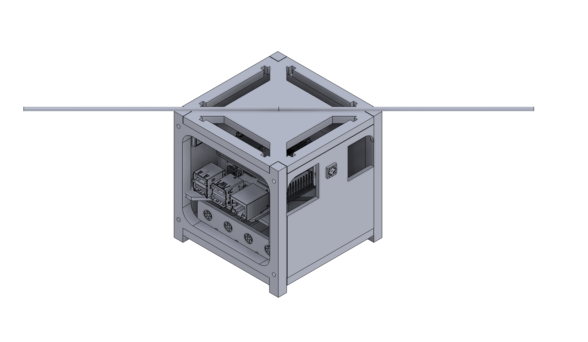

Сеть автономных спутников
Инновационная система спутниковой связи для дистанционного зондирования Земли. Наша сеть из шести CubeSat спутников обеспечивает непрерывный мониторинг и сбор данных в реальном времени.
Войти в системуШесть спутников работающих в координации для обеспечения непрерывного покрытия
Высокоточная съемка поверхности Земли в реальном времени
Обработка и визуализация телеметрии и данных сенсоров
Шифрованные каналы передачи данных и управления
Изменение параметров спутников в реальном времени
Оптимизированное энергопотребление и управление батареями
CubeSat - это стандартизированные миниатюрные спутники формата 3U, оснащенные современными сенсорами и системами связи. Каждый спутник имеет солнечные панели для автономной работы и систему ориентации для точного наведения на цели наблюдения.
Наша сеть обеспечивает глобальное покрытие с орбитой высотой 500-600 км, позволяя собирать данные с любой точки Земли каждые 90 минут.